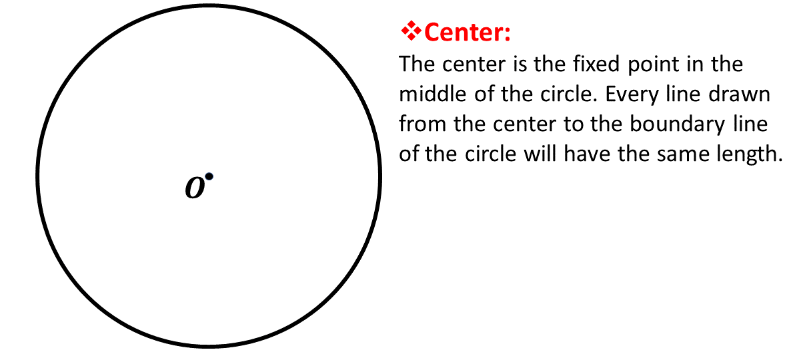
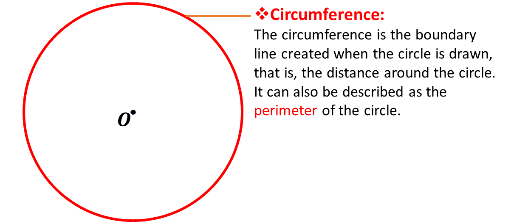
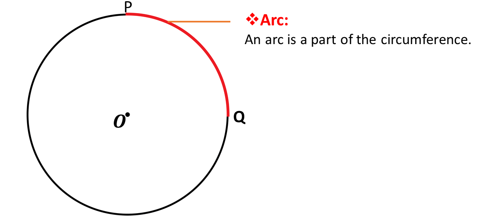
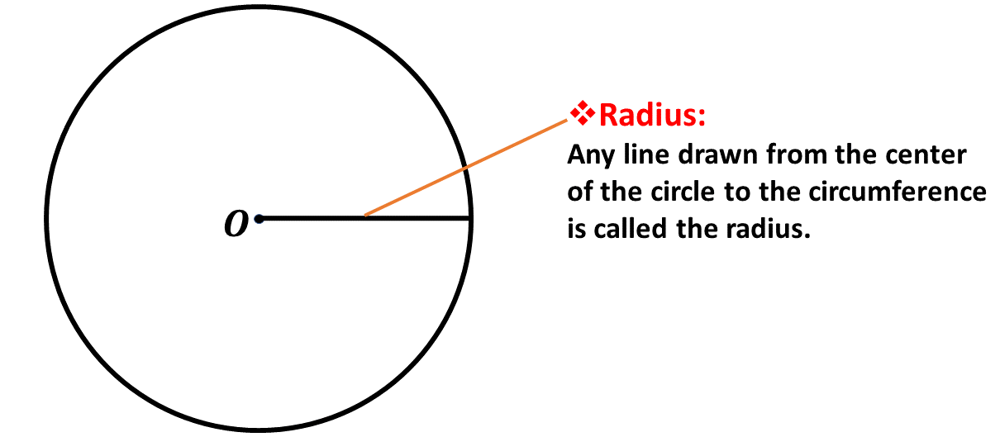
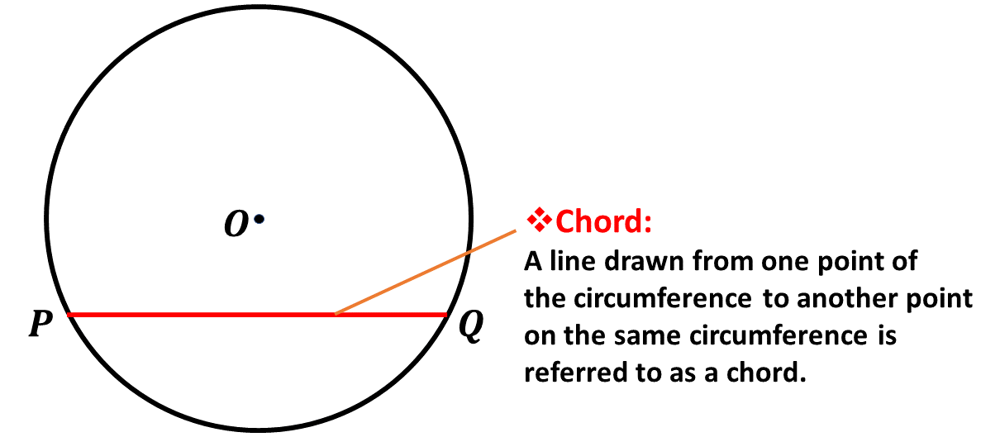
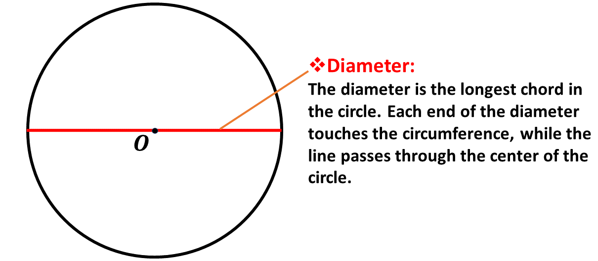
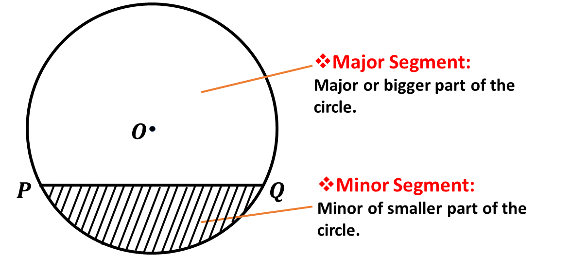
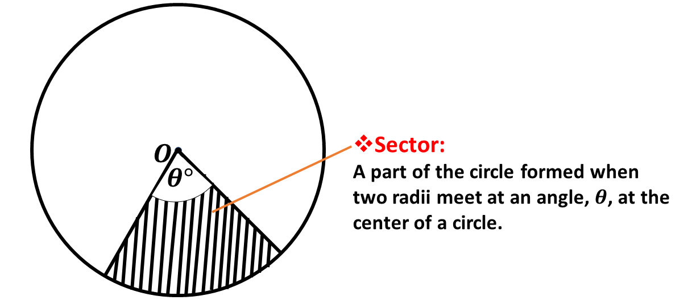
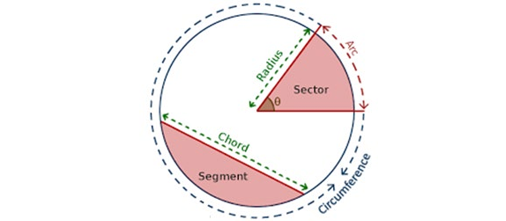

In this lesson, we will use the relationships between the diameter and the circumference of a circle to deduce the formula for finding the circumference of a circle and use it to solve problems.
A circle is a path (or shape) formed (or drawn) such that each point on the shape (or path) is equidistant (or of equal distance) to a fixed point in the middle of the shape called the center.
The Center, \(O\)
Below is a diagram of a circle with a fixed point, \(\mathbf{O}\), as the center.

Every line drawn from the center to any point on the path of the circle will have the same length (or distance).
The Circumference, \((\mathbf{C})\)
The path created when drawing the circle is called the circumference of the circle. It is described in the diagram below.
Since the circumference is a path (or distance) around the circle, we sometimes refer to the circumference as the perimeter of the circle.

In calculations, we usually represent the circumference with the letter, \(\mathbf{C}\).
The Arc
An arc is a part of the circumference. It describes a distance from one point to another on the circumference of a circle. In the diagram below, the distance from point \(P\) to point \(Q\) on the circumference is an example of an arc.

The Radius, \((r)\)
In our definition of the circle, we mentioned that it is the path which has its points equidistant from the center of the circle.
This distance from the center of the circle to any point on the circumference of the circle is called the radius of the circle. It is described in the diagram below.

In our calculations, we will usually represent the radius with the letter \(\mathbf{r}\).
The Chord
When you draw a line from one point of the circumference to another point, you will realize that the circle has been divided into two parts, called segments.
A line that divides the circle into two parts is called a chord. Find below an example of a chord in the diagram.

A chord can also be described as a line drawn from one point on the circumference to another point on the same circumference. The line \(PQ\) above is therefore said to be a chord.
Remember, that the chord divides the circle into two parts called segments.
The Diameter
The diameter is the longest chord that can be drawn in the circle. It divides the circle into two equal parts called semi-circles.
It can also be described as any straight line that passes through the center of the circle and touches the circumference at each end of the line.
Consider the diagram below:

In calculations, we usually represent the length of the diameter with the letter \(d\).
Since the diameter passes through the center of the circle, we can therefore say that the diameter is twice of the radius.
Mathematically, we write \[d = 2r\] where;
\(d \Rightarrow\) diameter
\(r \Rightarrow\) radius
Segments
When a chord is drawn from one point of the circumference to another, it divides the circle into two parts. These parts are called segments.
If the segment is less than a semi-circle, it is called a minor segment. This part of the circle is indicated by the shaded portion of the circle below.
If the segment is greater than a semi-circle, it is called a major segment. This is indicated by the unshaded portion of the circle below.

Remember that in Mathematics, segment simply means part.
The Sector & Angle of Sector
The sector is the part of the circle formed between two radii. The two radii that form the sector meet at an angle at the center usually indicated by \(\theta\), pronounced as "theta".

The Circle
Below is a summary of all the parts of the circle you have learnt so far.

Research
Research on the following as well with regards to the circle and share your findings with your friends.
1. Semi-circle
2. Quadrant of a circle
3. Tangent to a circle
Given any circular shape, when the circumference is divided by its diameter, a constant is obtained. That is, when you divide the circumference of any circle at all by its diameter, you get a constant.
For all circles, \[\frac{Circumference, \ C}{diameter, \ d} = constant\]
This constant is denoted by the Greek letter \(\pi\) (pronounced as 'pie'), where \(\pi = 3.14159\) correct to 5 decimal places. It implies that, for every given circle, \[\frac{C}{d} = \pi\]
In our calculations, for simplicity and because \(\pi\) is an irrational number, we will be using an approximated value for \(pi\), which is the fraction, \(\frac{22}{7}\).
Hence, our approximated values for \(\pi\) implies
\(\pi = \frac{22}{7}\) as an improper fraction,
\(\pi = 3\frac{1}{7}\) as a mixed fraction.
We can use the ratio of the constant obtained when the circumference of a circle is divided by its diameter to obtain a formular for calculating the circumference of a circle when the diameter is given.
We know that, for all circles \[\frac{Circumference, \ C}{diameter, \ d} = \pi\]
That is, \[\frac{C}{d} = \pi\]
Multiplying both sides by \(d\), \[d \times \frac{C}{d} = \pi \times d \]
It implies that, \[C = \pi d\]
That is,
Circumference, \(\mathbf{C = \pi d}\)
We will use the relation above to solve for the circumference of a circle when the diameter is given.
We know also that, the diameter is twice the radius of a circle. That is, \[d = 2r\]
We can therefore substitute \(d\) for \(2r\) in the equation above. That is; \[C = \pi(2r)\]
Re-arranging it, we have \[C = 2\pi r\]
That is,
Circumference, \(\mathbf{C = 2 \pi r}\)
We will use this formula to calculate the circumference of a circle when the radius of the circle is given.
Example 1
The radius of a circle is 140 cm. What is the
\(a.\) diameter;
\(b.\) circumference?
[Take \(\pi = \frac{22}{7}\)]
Solution
Example 2
Find the circumference of a circle who radius is 40 cm, rounding your answer to the nearest tenth. [Take \(\pi = 3.142\)]
Solution
Example 3
Find the circumference of a circle who radius is 2.5 m, rounding your answer to the nearest tenth. [Take \(\pi = 3.142\)]
Solution
Example 4
The diameter of a circular tray is 28 cm. Find the circumference of the tray. [Take \(\pi = \frac{22}{7}\)]
Solution
Example 5
The circumference of a circular track is 154 m. Find the diameter of the track. (Take \(\pi = \frac{22}{7}\))
Solution
Test yourself on what you have learnt so far. Click on the link below when you are ready.
Kindly contact the administrator on 0208711375 for the link to the test.
To advertise on our website kindly call on 0208711375 or 0249969740.